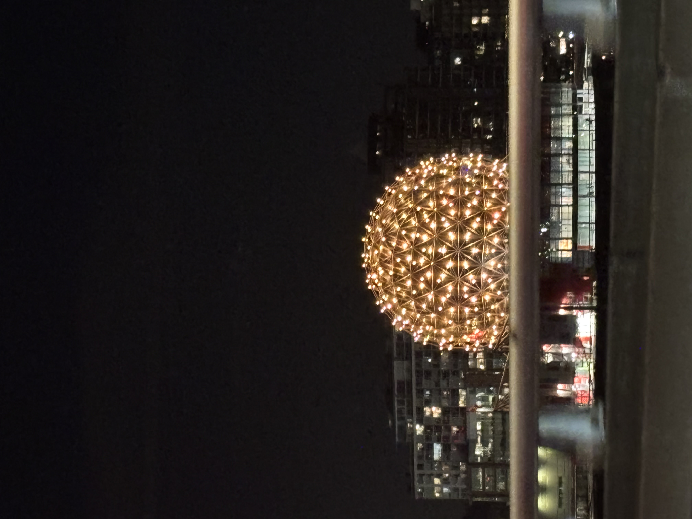

1. Science World

During my visit to Vancouver, I saw that the Science World dome was lit up. We were on our way back home when I took the picture of the beautiful dome. It was late night so we didn't go take a closer look at it, but I'd love to go back some day and explore its interactive exhibits.